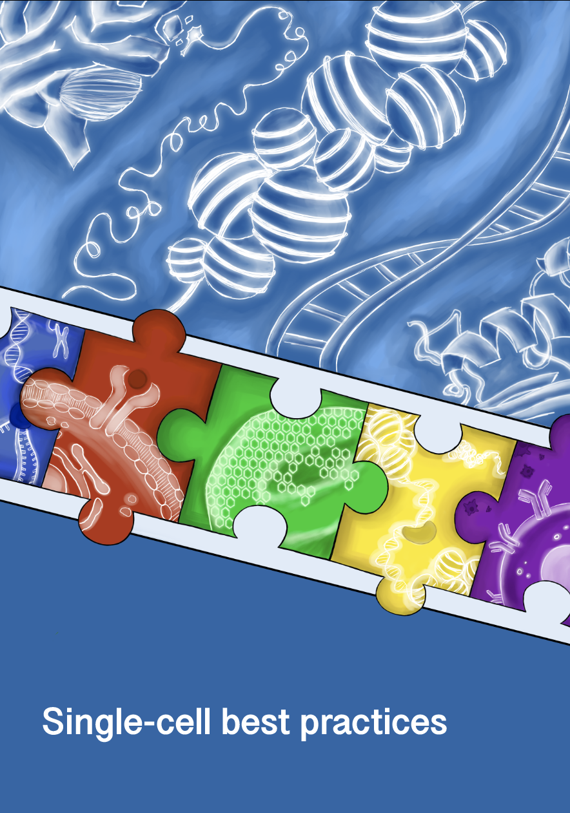

单细胞最佳实践#
介绍#
人体是一台复杂的机器，高度依赖于生命的基本单位——细胞。这些细胞展现出非凡的多样性，类型和功能各不相同，并能在发育过程中、应对疾病时或再生过程中发生重要的状态转变。这种细胞异质性体现在它们的结构、功能和基因表达谱上。一旦这种微妙的平衡被打破，便可能导致全身性的失调，进而引发癌症等严重疾病 [Macaulay et al., 2017]。因此，了解细胞在正常和扰动状态下的行为方式对于加深我们对整个细胞系统的理解至关重要。
为应对这一挑战，研究人员采用了多种策略，其中最有前景的方法之一是在单细胞水平上对细胞进行剖析。传统上，每个细胞的转录组主要通过一种称为单细胞 RNA 测序。然而，单细胞基因组学近来的进展，如今已能将转录组数据与空间信息、染色质可及性或蛋白质水平信息整合起来。这些进展不仅加深了我们对复杂调控机制的理解，也为数据分析带来了新的挑战。
如今，分析人员面临着数量惊人的计算工具——仅针对单细胞 RNA-seq 的方法就超过 1700 种 [Zappia and Theis, 2021]。要在如此庞大的工具版图中找准方向、产出可靠而前沿的结果，是一项重大的挑战。
这本书涵盖了什么#
本书旨在指导初学者和经验丰富的专业人士掌握 最佳实践 的单细胞测序分析方法。本书全面概述了从预处理、可视化到统计评估乃至更多环节的核心分析步骤。研读本书后，你将掌握独立分析单模态和多模态单细胞测序数据的技能。
书中给出的建议尽可能以外部基准测试和综述为依据，以确保所传授的方法既有效又可靠。此外，本书力求成为一份持续更新的动态资源，不断跟进新的发现与最新的最佳实践。
这本书没有涵盖的内容#
本书不涵盖生物学或计算机科学的基础概念，也不包括基本的编程技能。它也不是针对特定任务的所有可用工具的详尽清单。相反，本书强调那些经过外部基准测试、或被公认为社区标准的、经过充分验证的方法。当缺乏这类外部验证时，我们的建议仅基于我们丰富的实践经验。
谁该读这本书#
本书针对对单细胞数据分析感兴趣的不同受众，包括：生物学家，希望获得实用的数据分析技能；计算机科学家，希望探索单细胞数据的生物学基础与计算挑战；以及生物信息学家，希望完善其知识或紧跟最佳实践。不论你是一个想掌握基本知识的初学者，还是一位想完善技能和采用高效工作流程的有经验的分析家，这本书将指导你应对单细胞分析的复杂性。
书的结构#
每章对应一个典型的单细胞数据分析项目的独特阶段。虽然分析工作流程一般应遵循各章的顺序，但鼓励根据具体的下游分析目标灵活行事。每一章都附有广泛的参考资料，鼓励读者查阅这些主要资料来源，以加深了解。尽管我们努力提供全面的背景资料，但我们的摘要和 术语表 可能无法完整呈现每一项建议背后的全部推理。
先决条件#
生物信息学本质上是多学科的，需要同时掌握生物学和计算机科学的知识。单细胞分析要求特别高，因为它融合了多个子域，并经常涉及大型数据集。虽然本书无法涵盖计算单细胞分析所需的所有基础知识，但我们建议提供以下资源，以提高你的学习经验:
基本 Python 编程：熟悉控制流（如循环、条件语句）、基本数据结构（如列表、字典、集合），以及 Pandas、Numpy 等关键库是必不可少的。初学者可以参阅这本免费书籍： 用 Python 自动化无聊的东西.
AnnData和Scanpy：虽然有使用这些工具的经验会有帮助，但并非严格必需。本书详细介绍了 AnnData，并概述了使用 Scanpy 的工作流程；不过它并未涵盖 Scanpy 的全部功能。为加深理解，我们建议你进一步探索 Scanpy 教程 并按需查阅 Scanpy API 参考。
多模态数据分析:对于对多模态数据分析感兴趣的读者，了解诸如 Muon 和 MuData 等工具会很有帮助。 muon 教程 为这一领域提供了扎实的入门介绍。
基础 R 编程：掌握控制流和基本数据结构的知识即可。初学者可以参阅 R 数据科学 全面介绍。
基础生物学：虽然本书对数据生成做了粗略概述，但并不涉及诸如 DNA、RNA 和蛋白质等基础概念。 细胞的分子生物学 （作者 Bruce Alberts 等人）是分子生物学初学者推荐的参考读物。
Peer-review#
虽然该书的内容经过了多位作者，编辑和外部专家的审查，但本书并未经过正式的同行评审。我们恳请你提供建设性的反馈，以帮助完善和改进材料。为了分享你的想法:
提交 Issue：你可以前往 我们的 GitHub 仓库 提交 Issue，提出任何建议、疑问或需要澄清之处。
具体:在提供反馈时，请尽可能具体。例如，如果你有改进一节的建议，请指出确切的部分，并解释你为什么认为可以加以加强。
提供来源:如果适用，我们鼓励你提供信息来源或参考，以支持你的反馈或建议。这有助于确保材料保持准确和最新。
与社区讨论：欢迎评论现有 Issue，加入正在进行的讨论。这可以帮助我们根据社区的意见完善内容。
引用#
如果你认为我们的内容有助于你的研究，请引用如下:
Heumos, L., Schaar, A.C., Lance, C. 等。 跨模态的单细胞分析最佳实践。 Nat Rev Genet (2023). https://doi.org/10.1038/s41576-023-00586-w
贡献#
我们请社区为不断改进这一教学材料作出贡献。请阅读 贡献 以了解更多说明。
如果遇到疑问或问题，请在本仓库中提交一个 Issue 与我们联系。
替代格式#
本书的 PDF 版本可在我们的 发布页面 获取。
联系我们#
你可以报告问题和请求，相关入口见我们的 问题跟踪器.
如有咨询、演讲邀约或合作机会，请发送邮件至：
Anna Schaar: anna.schaar@helmholtz-munich.de
Lukas Heumos: lukas.heumos@helmholtz-munich.de
许可证#
本书采用 Apache 2.0 许可证 进行授权。
参考文献#
Iain C. Macaulay, Chris P. Ponting, and Thierry Voet. Single-cell multiomics: multiple measurements from single cells. Trends in genetics : TIG, 33(2):155–168, Feb 2017. S0168-9525(16)30169-X[PII]. URL: https://doi.org/10.1016/j.tig.2016.12.003, doi:10.1016/j.tig.2016.12.003.
Luke Zappia and Fabian J. Theis. Over 1000 tools reveal trends in the single-cell rna-seq analysis landscape. Genome Biology, 22(1):301, Oct 2021. URL: https://doi.org/10.1186/s13059-021-02519-4, doi:10.1186/s13059-021-02519-4.